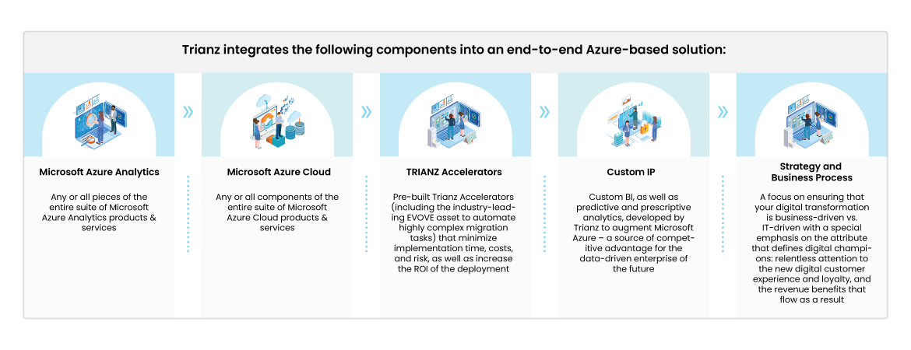
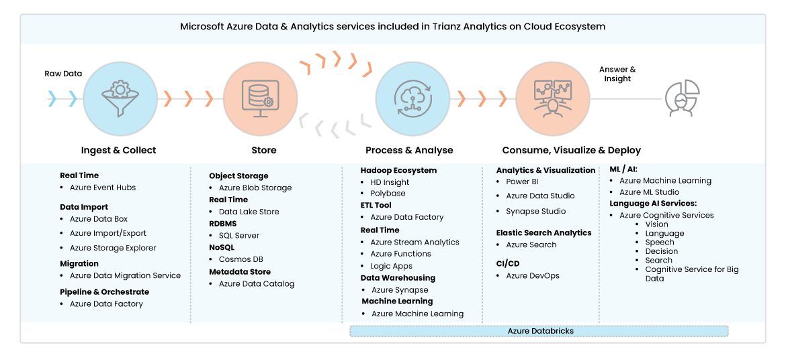

Data Analytics and the Digital Tide
One of the keys to succeeding in your digital transformation journey lies in a flexible, agile, and
integrated data supply chain that enables advanced analytics and seamless data access across diverse
networks. This will help your organization leverage its most valuable asset ‑ customer, product,
channel,
and external big data.
Our research practice has gathered over 1.5 million data points on all areas of digital transformation, and
our data shows that only 7% of organizations achieve industry-leading success through their transformation
initiatives. We call this select group “Digital Champions.” Digital Champions plan and execute their new
data-driven business models effectively to promote loyalty in their customer base and drive profitability
growth at a rate faster than their competitors.
Constructing these strategies requires a powerful, streamlined data pipeline and analytics apparatus. To
empower enterprises to become digital champions, our experts have created the NGTIQ Analytics on Cloud
Ecosystem for Azure, the industry's first fully comprehensive solution approach that expedites analytics
implementation on the Azure cloud.
Adopting Azure has many advantages:
- Virtually limitless data storage
- Access to data lakes
- Highly customizable data security
- An ever-expanding product suite of tools to help manage cloud data
Combined with NGTIQ's own proprietary assets and tools, the analytics program can help expedite
go-to-market with reduced risk. To deliver our end-to-end service, we rely on our thriving practice of Azure
experts, who have decades of combined experience executing large-scale transformations of unstructured data
using cloud-based analytics.
NGTIQ integrates the following components to deliver our end-to-end
Azure
analytics on cloud service:


NGTIQ Analytics framework enables digital transformations through effective strategies and excellence in
execution. Our experts use a data-driven approach to deliver tailored solutions for your business needs
rather than merely focusing on the technology itself. We place special emphasis on what defines digital
champions: unwavering focus and attention on improving the digital customer experience (CX). This attribute
drives customer loyalty and retention, which can spur long-term revenue growth.
NGTIQ: On-Track to Digital Leadership
NGTIQ manages and measures your organization's transformation, emphasizing key performance indicators
(KPIs) that define each stage of digital success. This close monitoring paves the way for a smooth analytics
transformation, putting your enterprise on track for digital leadership.
As shown in the graphic below, NGTIQ ACE consists of three main tracks:
Strategic Assessment Track
- Provide benchmarking to assess your current state of IT maturity
- Align the solution with your organization's strategic principles
- Determine any required analytics functionality and new data and analytics architecture
- Develop new KPIs an implementation roadmap
Cloud Deployment Track
- Migrate data from on-premise locations to the cloud
-
Deploy Azure cloud assets in any configuration based on business requirements implementing
cloud-native enterprise data lakes and/or data warehouses
- All enabled through the use of NGTIQ accelerators that reduce implementation time, cost, and
risk
Analytics on Cloud Deployment Track
- Deployment of your new analytics on cloud solution
-
Deploy any Azure Analytics or custom analytics assets as defined in the approved roadmap, with
close monitoring during and after deployment to guarantee availability and stability